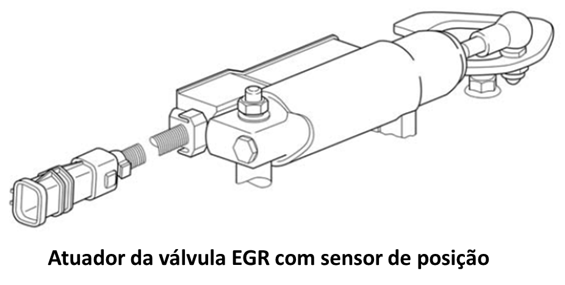

 
Descrição
A
redução do óxido de nitrogênio (NOx) nos gases de escape é uma condição
imprescindível para se cumprir as normas de emissões vigentes.
A recirculação de gases de exaustão é uma medida para baixar as porcentagens de NOx nos gases de escape.
Através
da recirculação de gases de exaustão, o ar aspirado é misturado numa
parte do gás de escape, para baixar ainda mais a temperatura de
combustão. Desta maneira, a capacidade de calor específico do ar
aspirado aumenta e é reduzido o teor de oxigênio.
• Recirculação de gases de escape regulada pela posição e por lambda
Para poder cumprir com segurança os rigorosos valores limite de NOx vigentes a partir da
EuroV, é necessária uma regulação de realimentação do gás de escape ainda mais exata. Esta é
realizada, de modo a ser atribuído ao campo característico do motor não um ângulo de válvula para
cada estado operacional, mas sim uma taxa de realimentação do gás de escape.
Com base na variedade de séries ou versões para motores com o sistema de injeção Common Rail,
bem como nas diferentes versões da recirculação de gases de escape, consulte a seguir os valores de
referência decisivos para a ativação ou bloqueio da recirculação de gases de escape.
A recirculação de gases de escape está bloqueada ou a válvula de bloqueio de realimentação do gás de
escape está fechada:
• a uma temperatura do líquido de refrigeração inferior a 60 °C ou superior a 95 °C
•
a uma temperatura do ar de sobrealimentação após o radiador do ar de
sobrealimentação abaixo dos 10 °C aprox. ou acima dos 70 °C aprox.
• a rotações do motor inferiores a 1100 rpm
• no intervalo de carga parcial mais baixo
• durante a aceleração ou com o sistema de freio motor acionado
• Retorno do gás de combustão
É indicado o tipo de realimentação do gás de escape que está montado/configurado neste veículo.
São possíveis as seguintes mensagens:
o Não regulado
o Regulado pela posição
o AGR regulado pela Lambda com regulagem de posição subjacente
• Sistema de recirculação de gás de escape
É indicado como o sistema de realimentação do gás de
escape, classificado pelo aparelho de
comando EDC. Com base nesta informação, é realizada, entre outras, a
atribuição da lógica de comando e dos sinais do módulo para a
realimentação do gás de escape.
São possíveis as seguintes classificações:
o Não operacional
o Operacional
• Posição efetiva da válvula de recirculação do gás de escape
Indica a posição atual da válvula de bloqueio
da realimentação do gás de escape classificada pelo módulo EDC. Com
base nesta informação, é realizada, entre outras,
a atribuição da lógica do módulo e dos sinais de comando para a
realimentação do gás de escape.
São possíveis as seguintes classificações:
No caso de realimentação do gás de escape regulada pela posição ou por sonda lambda
o Não operacional
o Operacional
• Posição zero, reconhecimento e adaptação da válvula AGR pelo módulo EDC
Indica a posição zero apreendida da válvula de bloqueio da realimentação do gás de escape
num modo de calibragem automático classificada pelo módulo EDC.
No caso de uma classificação como "inválido", controlar ou ajustar novamente a configuração do
cilindro regulador AGR e do sensor de curso. Consulte o manual de reparos para esta operação.
o Inválido
o Válido
• Bloqueio da recirculação do gás de escape
Indica o estado atual da realimentação do gás de
escape. Para as condições que colocam o estado da realimentação do gás
de escape em
"bloqueado", pode encontrar mais informações relativamente a uma
possível causa nesta janela de monitorização, na opção "Estado do
bloqueio da
recirculação do gás de escape".
São possíveis as seguintes mensagens:
o Liberado
(A liberação da realimentação do gás de escape é
realizada num sistema sem falhas a partir de uma temperatura do líquido
de refrigeração de aprox. 60 °C)
o Bloqueado
Estado do bloqueio da recirculação do gás de escape
São indicadas as condições de desativação detectadas
pelo sistema que levaram ao bloqueio do módulo de realimentação do gás
de escape. São possíveis simultaneamente várias condições de
desativação.
São possíveis as seguintes condições de desativação:
o Liberado
o Se estiver na eminência de formar fuligem (nuvem escura) na saída do escapamento
o Funcionamento dinâmico do motor
o Motor muito quente (temperatura do líquido de refrigeração acima dos 95 °C aprox., depende do tipo de motor)
o Motor muito frio (temperatura do líquido de refrigeração abaixo dos 60 °C aprox., depende do tipo de motor)
o Temperatura do ar de admissão muito alta
(Temperatura do ar de sobrealimentação acima dos 70 °C aprox., depende
do tipo de motor)
o Temperatura do ar de admissão muito baixa
(Temperatura do ar de sobrealimentação acima dos 10 °C aprox., depende
do tipo de motor)
o Sensor de temperatura da água de refrigeração avariado
o Sistema freio motor ativo
o Pedido de regeneração ativado
o Pressão atmosférica excessivamente baixa
o Motor em aquecimento acelerado
o Quantidade de injeção muito baixa
o Estágio final avariado
o Válvula EGR bloqueada, devido a sujeira
• Tensão do ponto nulo
É indicado o valor de tensão para a posição real
atual da válvula de bloqueio da realimentação do gás de escape
registrado pelo aparelho de comando através do sensor de curso montado
no cilindro regulador de realimentação do gás de escape.
Se o valor registrado for classificado como defeituoso, é disponibilizado um valor emergencial como substituição.
o Valor nominal: 0,5 - 0,9 V - na marcha em vazio
No caso de um cilindro regulador de realimentação do
gás de escape correctamente ajustado (1,25 ± 25 mm de tensão prévia),
valor nominal de aprox. 0,7 V
|